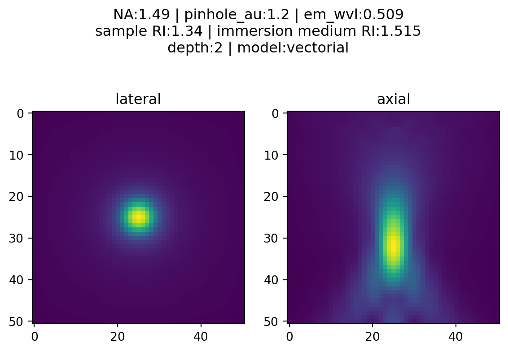

A measure of confocality (in Airy units) is the ratio between the back projected pinhole radius and the radius of the Airy disk.
Since the back projected pinhole radius (R_{BP}) is the size of the pinhole radius projected on the sample plane, it can be calculated with the pinhole radius (R_{PR}) divided by the total magnification between the pinhole(s) and the sample, which includes the objective’s magnification (M_{O}) and other potential sources of intermediate magnification (M_{I})
R_{BP} = {R_{PR} \over M_{O} * M_{I}}
The radius of an Airy disk (R_{A}) is equivalent to Rayleigh’s lateral resolution criterion which is the product of 0.61 and wavelength (\lambda) divided by the numerical aperture (NA)
R_{A} = 0.61 {\lambda \over NA }
Confocality with Yokogawa CSU-X1
With a physical pinhole radius of 25 microns, the Yokogawa CSU-X1 spinning disk unit is optimized for high resolution live-cell imaging, so we should expect a smaller confocality value when imaging with a high resolution objective than with a lower resolution objective.
Let’s compare the confocality between two objectives (100x/1.49 and 20x/0.75) when imaging EGFP (emission peak wavelength at 509nm).
Objective Mag
Objective NA
\lambda (um)
Back Projected Pinhole Radius (um)
Airy Disk Radius (um)
Confocality (Airy units)
20x
0.75
0.509
1.25
0.414
3
100x
1.49
0.509
0.166
0.208
1.2
Code
import psfmodels as psfmimport numpy as npimport matplotlib.pyplot as pltfrom matplotlib.colors import PowerNormdef backProjectedPinholeRadius(PinholeRadius, MagObjective, MagIntermediate=1):""" Return the back projected pinhole radius for a spinning disk confocal unit. Parameters ---------- PinholeRadius : float Physical radius of the pinhole MagObjective : int Magnification of the objective MagIntermediate : float Other magnification between the spinning disk and sample Returns ------- float The `pinholeRadius` divided by both `MagObjective` and `MagIntermediate` Examples -------- >>> backProjectedPinholeRadius(25, 100) 0.25 >>> backProjectedPinholeRadius(25, 100, 1.5) 0.16666666666666666 """return PinholeRadius / (MagObjective*MagIntermediate)def airyDiskRadius(wavelength, NA):""" Return the radius of an Airy Disk given a wavelength and numerical aperture. Parameters ---------- wavelength : float Wavelength NA : float Numerical aperture of the objective Returns ------- float 0.61 multiplied by `wavelength` and divided by `NA` Examples -------- >>> airyDiskRadius(509, 1.49) 208.38 >>> airyDiskRadius(509, 0.75) 413.99 """return0.61* wavelength / NAdef confocality(BackProjectedPinholeRadius, AiryDiskRadius):""" Return the confocality (in Airy Units) for a spinning disk confocal Parameters ---------- BackProjectedPinholeRadius : float The pinhole radius projected on the sample plane AiryDiskRadius : float The radius of an Airy Disk (also equivalent to Rayleigh's lateral resolution) Returns ------- float The `BackProjectedPinholeRadius` divided by the `AiryDiskRadius` Examples -------- >>> confocality(0.25, 0.208) 1.2 >>> confocality(1.25, 0.6) 2.1 """return BackProjectedPinholeRadius/AiryDiskRadiusdef plotConfocalPSF(params):""" Returns the confocal PSF while plotting lateral and axial views. """ nz = params["nx"] ConfocalPSF = psfm.confocal_psf(**params) fig, (ax1, ax2) = plt.subplots(1, 2) ax1.imshow(ConfocalPSF[nz//2], norm = PowerNorm(gamma=0.4)) ax2.imshow(ConfocalPSF[:,params["nx"]//2], norm = PowerNorm(gamma=0.4)) ax1.set_title("lateral") ax2.set_title("axial") figtitle1 ="NA:{} | pinhole_au:{} | em_wvl:{}\n".format( params["NA"],round(params["pinhole_au"], 2), params["em_wvl"], ) figtitle2 ="sample RI:{} | immersion medium RI:{}\n".format( params["ns"], params["ni"] ) figtitle3 ="depth:{} | model:{}".format( params["pz"], params["model"], ) fig.suptitle(figtitle1 + figtitle2 + figtitle3 )return ConfocalPSF
Optimal imaging with an oil immersion objective at the coverslip
First, let’s consider an optimal PSF where the location is right at the coverslip and the sample is mounted in an RI-matched solution.
Code
ex_wvl =0.488em_wvl =0.509pinhole_radius =25mag_objective =100NA =1.49pinhole_radius_BP = backProjectedPinholeRadius(pinhole_radius, mag_objective)airy_disk_radius = airyDiskRadius(em_wvl, NA)pinhole_au = confocality(pinhole_radius_BP, airy_disk_radius)oil_RI =1.515pz =0X1Params_high_res_index_matched = {"nx" : 51, # XY size of output PSF in pixels, must be odd"pz" : pz, # depth of point source relative to coverslip (um)"NA" : NA, # numerical aperture"ti0": 150, # working distance of the objective (um)"ni" : oil_RI, # immersion medium refractive index, experimental value"ni0": oil_RI, # immersion medium refractive index, design value"ex_wvl" : ex_wvl, # excitation wavelength (um)"em_wvl" : em_wvl, # emission wavelength (um)"ns" : oil_RI, # sample refractive index"pinhole_au" : pinhole_au, # pinhole size (Airy units)"model" : "vectorial",}PSF_fixed = plotConfocalPSF(X1Params_high_res_index_matched)
Note the symmetrical nature of the axial view when things are optimal.
Imaging with an oil immersion objective, depth=2
Even at a depth of 2 microns away from the coverslip, not much changes if the RI of the sample matches the RI of the immersion oil
Code
ex_wvl =0.488em_wvl =0.509pinhole_radius =25mag_objective =100NA =1.49pinhole_radius_BP = backProjectedPinholeRadius(pinhole_radius, mag_objective)airy_disk_radius = airyDiskRadius(em_wvl, NA)pinhole_au = confocality(pinhole_radius_BP, airy_disk_radius)oil_RI =1.515pz =2X1Params_high_res_index_matched_2um = {"nx" : 51, # XY size of output PSF in pixels, must be odd"pz" : pz, # depth of point source relative to coverslip (um)"NA" : NA, # numerical aperture"ti0": 150, # working distance of the objective (um)"ni" : oil_RI, # immersion medium refractive index, experimental value"ni0": oil_RI, # immersion medium refractive index, design value"ex_wvl" : ex_wvl, # excitation wavelength (um)"em_wvl" : em_wvl, # emission wavelength (um)"ns" : oil_RI, # sample refractive index"pinhole_au" : pinhole_au, # pinhole size (Airy units)"model" : "vectorial",}PSF_fixed_2um = plotConfocalPSF(X1Params_high_res_index_matched_2um)
Imaging in DMEM with an oil objective at depth = 0
Then, let’s consider a realistic example: live-cell imaging in DMEM
Code
ex_wvl =0.488em_wvl =0.509pinhole_radius =25mag_objective =100NA =1.49pinhole_radius_BP = backProjectedPinholeRadius(pinhole_radius, mag_objective)airy_disk_radius = airyDiskRadius(em_wvl, NA)pinhole_au = confocality(pinhole_radius_BP, airy_disk_radius)oil_RI =1.515DMEM_RI =1.34# DMEM with 10% FBSpz =0X1Params_livecell = {"nx" : 51, # XY size of output PSF in pixels, must be odd"pz" : pz, # depth of point source relative to coverslip (um)"NA" : NA, # numerical aperture"ti0": 150, # working distance of the objective (um)"ni" : oil_RI, # immersion medium refractive index, experimental value"ni0": oil_RI, # immersion medium refractive index, design value"ex_wvl" : ex_wvl, # excitation wavelength (um)"em_wvl" : em_wvl, # emission wavelength (um)"ns" : DMEM_RI, # sample refractive index"pinhole_au" : pinhole_au, # pinhole size (Airy units)"model" : "vectorial",}PSF_livecell = plotConfocalPSF(X1Params_livecell)
Imaging in DMEM with an oil objective at depth = 2
Axial resolution will deteriorate as the focus position moves away from the coverslip.
Let’s consider imaging at a depth of two microns
Code
ex_wvl =0.488em_wvl =0.509pinhole_radius =25mag_objective =100NA =1.49pinhole_radius_BP = backProjectedPinholeRadius(pinhole_radius, mag_objective)airy_disk_radius = airyDiskRadius(em_wvl, NA)pinhole_au = confocality(pinhole_radius_BP, airy_disk_radius)oil_RI =1.515DMEM_RI =1.34# DMEM with 10% FBSpz =2X1Params_livecell_2um = {"nx" : 51, # XY size of output PSF in pixels, must be odd"pz" : pz, # depth of point source relative to coverslip (um)"NA" : NA, # numerical aperture"ti0": 150, # working distance of the objective (um)"ni" : oil_RI, # immersion medium refractive index, experimental value"ni0": oil_RI, # immersion medium refractive index, design value"ex_wvl" : ex_wvl, # excitation wavelength (um)"em_wvl" : em_wvl, # emission wavelength (um)"ns" : DMEM_RI, # sample refractive index"pinhole_au" : pinhole_au, # pinhole size (Airy units)"model" : "vectorial",}PSF_livecell_2um = plotConfocalPSF(X1Params_livecell_2um)

Note how much worse the axial performance is from the spherical aberration induced by RI-mismatch between the sample and immersion oil!
Source Code
---title: Spinning Disk Confocal PSFs with PSFmodelsauthor: William Giangjupyter: python3date: "2023-06-04"categories: [Python, PSF, spinning-disk-confocal]format: html: code-fold: true code-tools: true html-math-method: katex pdf: geometry: - top=30mm - left=20mm docx: default---## MotivationObtaining an accurate point spread function (PSF) is vital for good deconvolution.Here's how to obtain the `pinhole_au` parameter for generating a [confocal PSF](https://github.com/tlambert03/PSFmodels/blob/a7815b2d256bca501aff674e059dc9685631b942/src/psfmodels/_core.py#L575) in [Talley Lambert's PSFmodels](https://github.com/tlambert03/PSFmodels).## TheoryA measure of confocality (in Airy units) is the ratio between the back projected pinhole radius and the radius of the Airy disk.Since the back projected pinhole radius ($R_{BP}$) is the size of the pinhole radius projected on the sample plane, it can be calculated with the pinhole radius ($R_{PR}$) divided by the total magnification between the pinhole(s) and the sample, which includes the objective's magnification ($M_{O}$) and other potential sources of intermediate magnification ($M_{I}$)$$ R_{BP} = {R_{PR} \over M_{O} * M_{I}} $$The radius of an Airy disk ($R_{A}$) is equivalent to Rayleigh's lateral resolution criterion which is the product of 0.61 and wavelength ($\lambda$) divided by the numerical aperture ($NA$)$$ R_{A} = 0.61 {\lambda \over NA } $$## Confocality with Yokogawa CSU-X1With a physical pinhole radius of 25 microns, the Yokogawa CSU-X1 spinning disk unit is optimized for high resolution live-cell imaging, so we should expect a smaller confocality value when imaging with a high resolution objective than with a lower resolution objective.Let's compare the confocality between two objectives (100x/1.49 and 20x/0.75) when imaging EGFP (emission peak wavelength at 509nm).| Objective Mag | Objective NA | $\lambda$ (um) | Back Projected Pinhole Radius (um) | Airy Disk Radius (um) | Confocality (Airy units) || -------- | --- | ----------- | ---------------------------------- | --------------------- | ----------- || 20x | 0.75 | 0.509 | 1.25 | 0.414 | 3 || 100x | 1.49 | 0.509 | 0.166 | 0.208 | 1.2 |```{python}#| tags: [hide-input]import psfmodels as psfmimport numpy as npimport matplotlib.pyplot as pltfrom matplotlib.colors import PowerNormdef backProjectedPinholeRadius(PinholeRadius, MagObjective, MagIntermediate=1):""" Return the back projected pinhole radius for a spinning disk confocal unit. Parameters ---------- PinholeRadius : float Physical radius of the pinhole MagObjective : int Magnification of the objective MagIntermediate : float Other magnification between the spinning disk and sample Returns ------- float The `pinholeRadius` divided by both `MagObjective` and `MagIntermediate` Examples -------- >>> backProjectedPinholeRadius(25, 100) 0.25 >>> backProjectedPinholeRadius(25, 100, 1.5) 0.16666666666666666 """return PinholeRadius / (MagObjective*MagIntermediate)def airyDiskRadius(wavelength, NA):""" Return the radius of an Airy Disk given a wavelength and numerical aperture. Parameters ---------- wavelength : float Wavelength NA : float Numerical aperture of the objective Returns ------- float 0.61 multiplied by `wavelength` and divided by `NA` Examples -------- >>> airyDiskRadius(509, 1.49) 208.38 >>> airyDiskRadius(509, 0.75) 413.99 """return0.61* wavelength / NAdef confocality(BackProjectedPinholeRadius, AiryDiskRadius):""" Return the confocality (in Airy Units) for a spinning disk confocal Parameters ---------- BackProjectedPinholeRadius : float The pinhole radius projected on the sample plane AiryDiskRadius : float The radius of an Airy Disk (also equivalent to Rayleigh's lateral resolution) Returns ------- float The `BackProjectedPinholeRadius` divided by the `AiryDiskRadius` Examples -------- >>> confocality(0.25, 0.208) 1.2 >>> confocality(1.25, 0.6) 2.1 """return BackProjectedPinholeRadius/AiryDiskRadiusdef plotConfocalPSF(params):""" Returns the confocal PSF while plotting lateral and axial views. """ nz = params["nx"] ConfocalPSF = psfm.confocal_psf(**params) fig, (ax1, ax2) = plt.subplots(1, 2) ax1.imshow(ConfocalPSF[nz//2], norm = PowerNorm(gamma=0.4)) ax2.imshow(ConfocalPSF[:,params["nx"]//2], norm = PowerNorm(gamma=0.4)) ax1.set_title("lateral") ax2.set_title("axial") figtitle1 ="NA:{} | pinhole_au:{} | em_wvl:{}\n".format( params["NA"],round(params["pinhole_au"], 2), params["em_wvl"], ) figtitle2 ="sample RI:{} | immersion medium RI:{}\n".format( params["ns"], params["ni"] ) figtitle3 ="depth:{} | model:{}".format( params["pz"], params["model"], ) fig.suptitle(figtitle1 + figtitle2 + figtitle3 )return ConfocalPSF```#### Optimal imaging with an oil immersion objective at the coverslipFirst, let's consider an optimal PSF where the location is right at the coverslip and the sample is mounted in an RI-matched solution.```{python}#| tags: [hide-input]ex_wvl =0.488em_wvl =0.509pinhole_radius =25mag_objective =100NA =1.49pinhole_radius_BP = backProjectedPinholeRadius(pinhole_radius, mag_objective)airy_disk_radius = airyDiskRadius(em_wvl, NA)pinhole_au = confocality(pinhole_radius_BP, airy_disk_radius)oil_RI =1.515pz =0X1Params_high_res_index_matched = {"nx" : 51, # XY size of output PSF in pixels, must be odd"pz" : pz, # depth of point source relative to coverslip (um)"NA" : NA, # numerical aperture"ti0": 150, # working distance of the objective (um)"ni" : oil_RI, # immersion medium refractive index, experimental value"ni0": oil_RI, # immersion medium refractive index, design value"ex_wvl" : ex_wvl, # excitation wavelength (um)"em_wvl" : em_wvl, # emission wavelength (um)"ns" : oil_RI, # sample refractive index"pinhole_au" : pinhole_au, # pinhole size (Airy units)"model" : "vectorial",}PSF_fixed = plotConfocalPSF(X1Params_high_res_index_matched)```Note the symmetrical nature of the axial view when things are optimal.#### Imaging with an oil immersion objective, depth=2Even at a depth of 2 microns away from the coverslip, not much changes if the RI of the sample matches the RI of the immersion oil```{python}#| tags: [hide-input]ex_wvl =0.488em_wvl =0.509pinhole_radius =25mag_objective =100NA =1.49pinhole_radius_BP = backProjectedPinholeRadius(pinhole_radius, mag_objective)airy_disk_radius = airyDiskRadius(em_wvl, NA)pinhole_au = confocality(pinhole_radius_BP, airy_disk_radius)oil_RI =1.515pz =2X1Params_high_res_index_matched_2um = {"nx" : 51, # XY size of output PSF in pixels, must be odd"pz" : pz, # depth of point source relative to coverslip (um)"NA" : NA, # numerical aperture"ti0": 150, # working distance of the objective (um)"ni" : oil_RI, # immersion medium refractive index, experimental value"ni0": oil_RI, # immersion medium refractive index, design value"ex_wvl" : ex_wvl, # excitation wavelength (um)"em_wvl" : em_wvl, # emission wavelength (um)"ns" : oil_RI, # sample refractive index"pinhole_au" : pinhole_au, # pinhole size (Airy units)"model" : "vectorial",}PSF_fixed_2um = plotConfocalPSF(X1Params_high_res_index_matched_2um)```#### Imaging in DMEM with an oil objective at depth = 0Then, let's consider a realistic example: live-cell imaging in DMEM```{python}#| scrolled: false#| tags: [hide-input]ex_wvl =0.488em_wvl =0.509pinhole_radius =25mag_objective =100NA =1.49pinhole_radius_BP = backProjectedPinholeRadius(pinhole_radius, mag_objective)airy_disk_radius = airyDiskRadius(em_wvl, NA)pinhole_au = confocality(pinhole_radius_BP, airy_disk_radius)oil_RI =1.515DMEM_RI =1.34# DMEM with 10% FBSpz =0X1Params_livecell = {"nx" : 51, # XY size of output PSF in pixels, must be odd"pz" : pz, # depth of point source relative to coverslip (um)"NA" : NA, # numerical aperture"ti0": 150, # working distance of the objective (um)"ni" : oil_RI, # immersion medium refractive index, experimental value"ni0": oil_RI, # immersion medium refractive index, design value"ex_wvl" : ex_wvl, # excitation wavelength (um)"em_wvl" : em_wvl, # emission wavelength (um)"ns" : DMEM_RI, # sample refractive index"pinhole_au" : pinhole_au, # pinhole size (Airy units)"model" : "vectorial",}PSF_livecell = plotConfocalPSF(X1Params_livecell)```#### Imaging in DMEM with an oil objective at depth = 2Axial resolution will deteriorate as the focus position moves away from the coverslip.Let's consider imaging at a depth of two microns```{python}#| tags: [hide-input]ex_wvl =0.488em_wvl =0.509pinhole_radius =25mag_objective =100NA =1.49pinhole_radius_BP = backProjectedPinholeRadius(pinhole_radius, mag_objective)airy_disk_radius = airyDiskRadius(em_wvl, NA)pinhole_au = confocality(pinhole_radius_BP, airy_disk_radius)oil_RI =1.515DMEM_RI =1.34# DMEM with 10% FBSpz =2X1Params_livecell_2um = {"nx" : 51, # XY size of output PSF in pixels, must be odd"pz" : pz, # depth of point source relative to coverslip (um)"NA" : NA, # numerical aperture"ti0": 150, # working distance of the objective (um)"ni" : oil_RI, # immersion medium refractive index, experimental value"ni0": oil_RI, # immersion medium refractive index, design value"ex_wvl" : ex_wvl, # excitation wavelength (um)"em_wvl" : em_wvl, # emission wavelength (um)"ns" : DMEM_RI, # sample refractive index"pinhole_au" : pinhole_au, # pinhole size (Airy units)"model" : "vectorial",}PSF_livecell_2um = plotConfocalPSF(X1Params_livecell_2um)```Note how much worse the axial performance is from the spherical aberration induced by RI-mismatch between the sample and immersion oil!